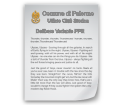

Tavola 9 Ter - Valori ambientali architettonici e monumentali, consistenza volumetrica del numero dei piani utili e condizioni d'uso ai piani terra


Tavola 9 Ter - Valori ambientali architettonici e monumentali, consistenza volumetrica del numero dei piani utili e condizioni d'uso ai piani terra |
||
|  | Tavola 9 Ter Legenga | |
| Tavola 9 I A 1 - Ter | ||
| Tavola 9 I A 2 - Ter | ||
| Tavola 9 I A 3 - Ter | ||
| Tavola 9 I A 4 - Ter | ||
| Tavola 9 Ter I B 1 | ||
| Tavola 9 Ter I B 2 | ||
| Tavola 9 Ter I B 3 | ||
| Tavola 9 Ter I B 4 | ||
| Tavola 9 Ter II A 1 | ||
| Tavola 9 Ter II A 2 | ||
| Tavola 9 Ter II A 3 | ||
| Tavola 9 Ter II A 4 | ||
| Tavola 9 Ter II B 1 | ||
| Tavola 9 Ter II B 2 | ||
|
Tavola 9 Ter II B 3 | |
|
Tavola 9 Ter II B 4 | |
| Elenco completo di tutti gli elaboarti del Centro Storico Palermo | ||